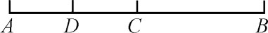
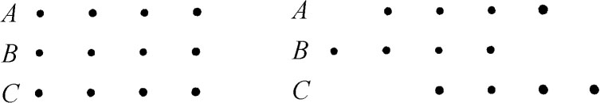
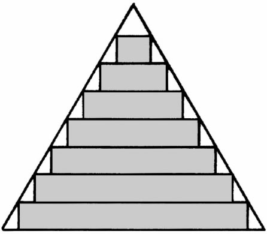

6．埃利亚学派
毕达哥拉斯派发现不可公度比这一事实突出了使所有希腊数学家迫切要想解决的一个难点——离散与连续的关系。整数代表离散的对象，可公度比代表两批离散对象间的关系，或代表有公共度量单位的两个长度间的关系，因这时每个长度都可看成度量单位的离散集合。不过，长度一般说并非度量单位的离散集合；这就是出现不可公度长度之比的原因。换言之，长度、面积、体积、时间和其他一些量是连续量。例如，我们说一根线段用某一单位来量可以有无理的或有理的长度。但希腊人没有获得这种观点。
芝诺把离散与连续的关系问题惹人注意地摆了出来。芝诺住在意大利南部埃利亚城，出生于公元前495年到前480年之间。他与其说是数学家不如说是哲学家。他同他的老师巴门尼德一样，据说原来也是毕达哥拉斯派学者。他提出一些悖论，其中四个是关于运动的。他提出这些悖论的目的何在并不清楚，因为如今对希腊哲学史还知道得不够。巴门尼德曾争论说运动或变动是不可能的，而据说芝诺为之辩护。芝诺攻击过毕达哥拉斯派，因他们相信几何上的点是有大小但不能分的单元。我们不确切知道芝诺所说的话，只能依靠亚里士多德的引述，而亚里士多德引他的话则是为了要批评他。此外我们还依据6世纪辛普利修斯的引述，但他的话又是根据亚里士多德的著作而来的。
关于运动的四个悖论是各不相关的，但四者总的用意可能是为提出同一个重要的论点。当时人们对空间和时间有两种对立的看法：一种认为空间和时间无限可分，那样的话运动是连续而又平顺的；另一种认为空间和时间是由不可分的小段组成的（像放映电影时那样），那样的话运动将是一连串的小跳动。芝诺的争论是针对这两种理论的，他那关于运动的头两个悖论是反对第一种学说的，而后两个悖论则是反对第二种学说的。这两对悖论中，每一对的头一个悖论考察单独一个物体的运动，其第二个则考察若干物体的相对运动。
亚里士多德在他的《物理》（Physics）中陈述了第一个悖论，叫做两分法悖论（Dichotomy），其说如下：“第一个悖论说运动不存在，理由是运动中的物体在到达目的地前必须到达半路上的点。”这话的意思是说为通过AB（图3.7），必须先到达C，为到达C必须先到达D等。换言之，若设空间无限可分，从而有限长度含无限多的点，这就不可能在有限时间内通过有限长度。

图3.7
亚里士多德在驳斥芝诺时，说关于一个事物的无限性有两种意义：无限可分或无限宽广。在有限时间内可以接触从可分意义上是无限的东西，因为从这意义上讲时间也是无限的；所以在有限时间内可以通过有限的长度。另外有人把芝诺的悖论理解为：要通过有限长度就必须通过无穷多的点，这就意味着必须到达没有终点的某种东西的终点。
第二个悖论叫阿喀琉斯（Achilles，又译“阿基里斯”，希腊的神行太保。——译者）和乌龟赛跑。据亚里士多德所述：“它说动得最慢的东西不能被动得最快的东西赶上，因为追赶者首先必须到达被追者出发之点，因而行动较慢的被追者必定总是跑在前头。这论点同两分法悖论中的一样，所不同者是不必再把所需通过的距离一再平分。”之后亚里士多德说，如果动得较慢的对象通过一段有限的距离，则根据他答复第一个悖论所述的那个理由，它是可以被追上的。
后两悖论是针对“影片式运动”而言的。第三个关于箭的悖论照亚里士多德所述是这样的：“他（芝诺）讲的第三个悖论是说飞矢不动。他是在假定了时间由瞬刻组成之后得出这结论来的。如果没有这假定也就不会有这结论。”据亚里士多德说，芝诺的意思是箭在运动的任一瞬刻必在一确定位置，因而是静止的。所以箭就不能处于运动状态。亚里士多德说如果我们不承认时间具有不可分的单元，这悖论就站不住脚了。
第四个悖论叫操场或游行队伍悖论，用亚里士多德的话来说是这样的：“第四个悖论是关于一组物体沿跑道挨着另一组个数相同的物体彼此相向移动，一组是从末端出发而另一组是从中间开始移动，两者移动速度一样；他（芝诺）就作出结论说由此可知一半的时间等于双倍的时间。错误在于假定了以相同速度移动的两物体，其一通过一个移动物体，而另一通过一个等长的静止物体，所需时间相等，而这个假定是错的。”
我们可把芝诺第四悖论中可能的要点陈述如下：设有A，B，C三队兵（图3.8），并设在最小的时间单位内，B往左移动一位而C则往右移动一位。于是相对于B而言C就移动了两位。因此必有一个使C向B的右方移动一位所需的较小时间单位，否则半个时间单位将等于一个时间单位。

图3.8
可能芝诺只是想指出速度是相对的。C相对于B的速度并非C相对于A的速度。或者他的意思是说没有什么绝对空间可作为规定速度的依据。亚里士多德说芝诺的谬误在于假定以相同速度移动的两物体在通过一移动物体与通过一固定物体之际需要同样时间。芝诺的论点和亚里士多德的批驳都说得不清楚。但若把这悖论看作是为攻击时间和空间具有不可分的最小段落之说而作的（因芝诺当时在攻击此说），那么他的论点就有了意义。
我们可把色雷斯地区阿布德拉（Abdera in Thrace）的德谟克利特（Democritus，约公元前460—约前370）也归入埃利亚学派。据说他很聪明，研究许多学问，其中包括天文。由于德谟克利特原属留基伯（Leucippus）学派而后者为芝诺的学生，故他所考察的许多数学问题必定是为芝诺的思想所启发的。他写出关于几何、关于数、关于连续的直线和立体的书。他的几何著作很可能是欧几里得《原本》问世以前的重要著作。
阿基米德说德谟克利特发现圆锥和棱锥的体积等于同底同高的圆柱和棱柱体积的三分之一，但证明是由欧多克索斯作出的。德谟克利特把圆锥看作是一系列不可分的薄层叠成的（图3.9），但若设各层相等则得圆柱，而若设各层不等，则圆锥面不能光滑，因而这使他感到苦恼。

图3.9